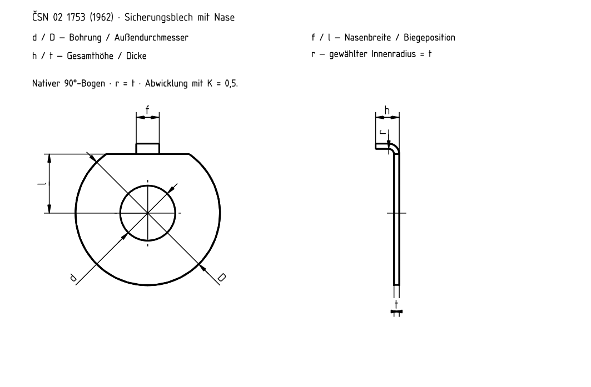

Sicherungsblech mit Nase
CS
EN
DE
FR
RU

ČSN 02 1753 (1962) · Zeichnung des nativen Modells
Sicherungsblech mit Nase
Sicherungsblech mit Nase
M
d [mm]
D [mm]
f [mm]
l [mm]
h [mm]
t [mm]
M4
4,3
14
2,5
5,5
2,1
0,3
M5
5,3
17
3,5
7
2,5
0,5
M6
6,4
18
3,5
7,5
2,5
0,5
M8
8,4
22
3,5
9
3,6
0,8
M10
10,5
26
4,5
10
4,6
0,8
M12
13
30
4,5
12
5
1
M14
15
32
4,5
13
5
1
M16
17
36
5,5
15
5
1
M18
19
40
6
17
5
1
M20
21
42
6
18
5
1
M22
23
46
7
20
5
1
M24
25
50
7
21
6
1
M27
28
58
8
23
9
1,5